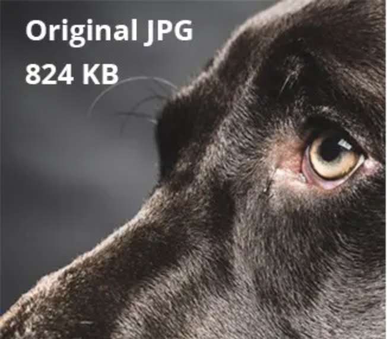
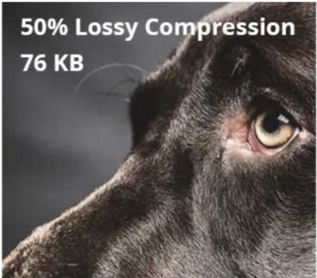
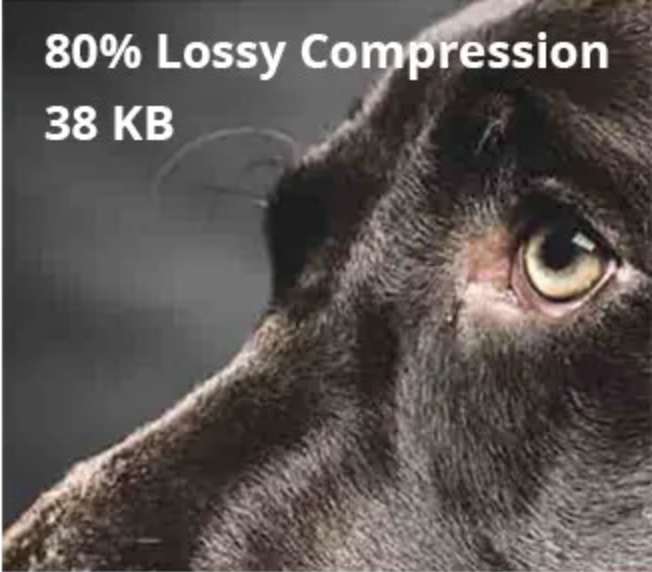

<!DOCTYPE html>
<html lang="en">
<head>
    <meta charset="UTF-8">
    <title>JPEG Compression Explained</title>
    <style>
        body {
            font-family: Arial, sans-serif;
            line-height: 1.6;
            margin: 0;
            padding: 20px;
        }
        h1, h2 {
            color: #333;
        }
        p {
            margin-bottom: 10px;
        }
        #jpegCompressionContent {
            background-color: #f8f8f8;
            padding: 20px;
            border-radius: 8px;
            box-shadow: 0 2px 4px rgba(0,0,0,0.1);
        }
        .compression-example {
            margin-top: 20px;
            text-align: center;
        }
        .compression-example img {
            margin: 10px;
            max-width: 100%; /* Ensures the image is responsive and fits within its container */
            height: auto;
        }
        .perceptual-distortion {
            text-align: center;
            margin-top: 20px;
        }
        .perceptual-distortion img {
            max-width: 100%;
            height: auto;
        }
    </style>
</head>
<body>

<div id="jpegCompressionContent">
</div>

<script>
    function addJPEGCompressionContent() {
        const container = document.getElementById('jpegCompressionContent');
                const content = `
           <div id="topinfo">
        <h1>CS1102 - Course Project - 2023/2024 Semester B</h1>
        <h4>Different image compression algorithams</h4>
        <p> 
          <table>
            <tr>
              <td>Chan Yue Ting (57276040)</td>
              <td>Lau Foo Kiu (56616932)</td>
              <td>Pan Ching Man (56623253)</td>
              <td>Yau Kam Chau (57850287)</td>
              <td>Yau Wing Yan (56611870)</td>
            </tr>
          </table>
        </p>
        <hr/>
    </div>
 <h1>Understanding JPEG Lossy Compression</h1>
            <p>The JPEG image format is widely used due to its efficient lossy compression algorithm, which significantly reduces file size with minimal loss of image quality. This efficiency is achieved through a multi-step process that includes color space conversion, downsampling, discrete cosine transform (DCT), quantization, and entropy encoding.</p>
            <div class="compression-example">
                
                
                
            </div>
            <h2>Color Space Conversion and Downsampling</h2>
            <p>JPEG compression begins with the conversion of the image from the RGB color space to YCbCr. This step separates the image into luminance (Y) and chrominance (Cb and Cr) components. Since the human eye is more sensitive to changes in brightness than color, the algorithm can downsample the chrominance components, reducing the resolution of color information without significantly impacting perceived quality.</p>
            <h2>Discrete Cosine Transform (DCT)</h2>
            <p>Following downsampling, the image is divided into 8x8 pixel blocks. Each block undergoes the Discrete Cosine Transform (DCT), which converts the spatial domain data into frequency domain data. This step is crucial for identifying and separating high-frequency details (which are less perceptible to the human eye) from low-frequency components.</p>
            <h2>Quantization</h2>
            <p>Quantization is the heart of the lossy compression process. It reduces the precision of the DCT coefficients according to a quantization matrix, which prioritizes lower frequencies over higher frequencies. This step significantly reduces the amount of data, as many high-frequency components are rounded to zero, but it also introduces the most loss to the original image data.</p>
            <h2>Entropy Encoding</h2>
            <p>The final step in JPEG compression is entropy encoding, which further compresses the quantized data without loss. Huffman coding is commonly used, exploiting the frequency of different coefficients to encode common patterns with shorter codes, thereby reducing the overall file size.</p>
            <div class="perceptual-distortion">
                
            </div>
        `;
        
        container.innerHTML = content;
    }
    addJPEGCompressionContent();
</script>

</body>
</html>
